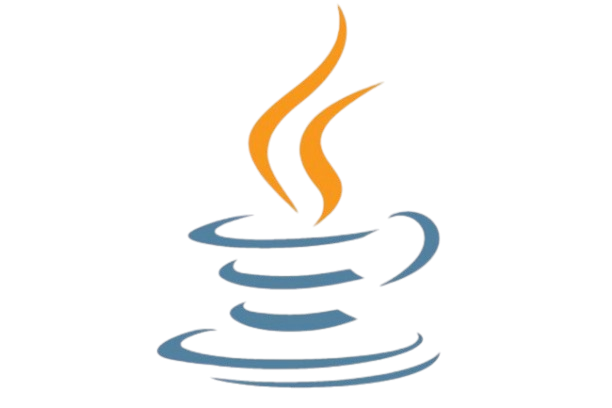
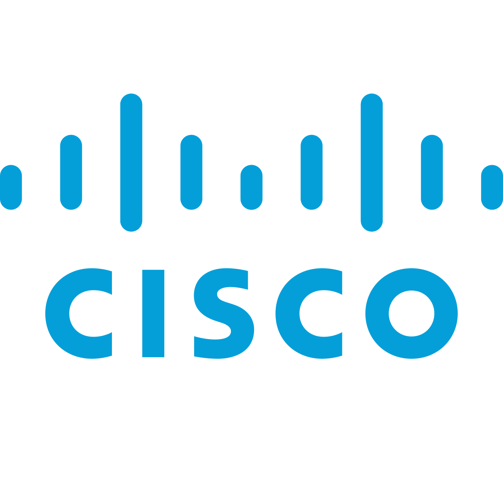

Mes documentations
Incident Cyber
Projet FastSushi Client Léger

Projet FastSushi Client Lourd
 Script de purge Powershell
Script de purge Powershell
Procédure Fortitoken
Création d’accès distant par ip
virtuelle
Incident sur un serveur de sauvegardes
Création de réseaux virtuels

Certification Cisco